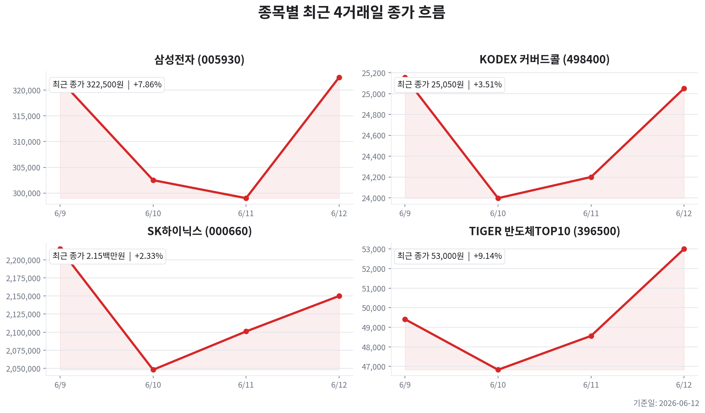

TIGER 반도체TOP10
오늘자 뉴스 0건
| 종목 | 티커 | 기준 가격 | 전 거래일 종가 | 등락 | 변동률 |
|---|---|---|---|---|---|
| TIGER 반도체TOP10 | 396500 | 53,000원 | 48,560원 | +4,440원 | +9.14% |
| KODEX 200타겟위클리커버드콜 | 498400 | 25,050원 | 24,200원 | +850원 | +3.51% |
| 삼성전자 | 005930 | 322,500원 | 299,000원 | +23,500원 | +7.86% |
| SK하이닉스 | 000660 | 2,150,000원 | 2,101,000원 | +49,000원 | +2.33% |



오늘의 핵심은 HBM 공급망 프리미엄과 국내 대형 반도체 수급 회복입니다. 전일 KOSPI가 8,123.62로 4.63% 급등했고, 삼성전자 322,500원(+7.86%), SK하이닉스 2,150,000원(+2.33%), TIGER 반도체TOP10 53,000원(+9.14%)이 동반 반등했습니다.
뉴스 흐름은 엔비디아 중심 HBM 공급망 고착, 삼성전자·SK하이닉스의 첨단 D램·HBM 장비 구매 확대, 외국인·기관의 국내 대형주 순매수 전환으로 요약됩니다. 반대로 중국 CXMT의 대규모 자금조달·증설 가능성과 미·중 AI칩 규제 변화는 중기 리스크입니다.
사이클 단계는 공급 부족 → 가격 상승 → 실적 폭증 → 주가 상승 국면의 중반 이후로 봅니다. HBM은 고객 인증과 패키징 병목이 존재해 범용 DRAM보다 공급 탄력성이 낮고, 이 때문에 선두 공급사의 마진 프리미엄이 유지되고 있습니다.
| 변수 | 오늘의 해석 | 투자 시사점 |
|---|---|---|
| DRAM/HBM | HBM 공급망 락인과 첨단 D램 투자 확대 뉴스가 동시 확인 | SK하이닉스 프리미엄 유지, 삼성전자는 HBM 추격 속도 확인 필요 |
| NAND/SSD | AI 서버용 SSD 수요 기대가 삼성전자 회복 논리를 보강 | 삼성전자 메모리 믹스 개선 기대는 유효하나 실제 수익성 확인 필요 |
| CAPEX | 2분기 장비 구매 확대 뉴스는 수요 강세와 공급 확대 신호를 동시에 내포 | 단기 호재, 중기에는 공급 과잉 전환 리스크로 관리 |
PER은 두 회사 모두 forward 기준 5배대가 조회되어 표면적으로 싸 보입니다. 다만 호황기 저PER은 이익 피크가 반영된 착시일 수 있어, PBR과 다음 분기 이익 증가율의 둔화 여부를 함께 봐야 합니다.
| 구분 | 삼성전자 | SK하이닉스 |
|---|---|---|
| 주가 흐름 | 전일 +7.86% 급등, HBM·SSD 회복 기대 반영 | 전일 +2.33%, 고가권에서 HBM 선도주 프리미엄 유지 |
| 이익 순도 | 메모리, 파운드리, MX가 섞인 복합 회복형 | AI 서버용 HBM·DRAM 민감도가 높아 순도 우위 |
| 리스크 | HBM 인증·수율·파운드리 회복 속도 | 고점 프리미엄, 고객 집중도, 급등 피로 |
SK하이닉스는 HBM 실적 순도가 높아 사이클 탄력성이 크지만 가격이 이미 고점권에 접근한 만큼 신규 진입은 눌림 확인이 중요합니다. 삼성전자는 HBM 추격과 AI SSD 확장 뉴스가 붙으면 후발 모멘텀이 커질 수 있으나, 확인 전 과도한 선반영은 경계해야 합니다.
원/달러는 1,517.89원으로 직전일 대비 하락해 외국인 매수 심리에 우호적이었습니다. 미국 10년물은 4.487%, 30년물은 4.975%로 높은 수준을 유지해 성장주 밸류에이션의 상단을 제한할 수 있습니다. WTI는 84.29달러로 하락해 인플레이션 압력은 완화됐지만, 지정학 리스크와 정책 뉴스에 따라 변동성이 커질 수 있습니다.
오늘자 뉴스 0건
이 파일은 자동 생성 결과입니다. 투자 판단 전 원문 뉴스와 실시간 호가를 다시 확인하세요.